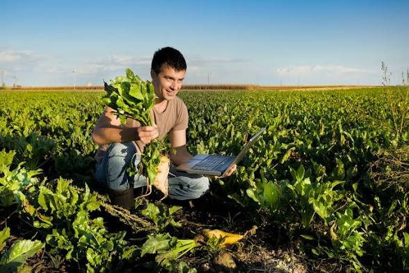

Agriculture is an important sector of the Federal Republic of Botswenia, contributing to food production, rural livelihoods and national economic development. It supports the country's food supply and plays an essential role in the agricultural and rural economy.
Botswenia follows a combination of traditional and modern agricultural practices, with approximately 50% of its agricultural activities based on traditional farming methods and the remaining 50% based on modern and mechanised farming. This combination allows traditional agricultural knowledge and modern farming technologies to contribute equally to agricultural development.
The major staple grains and food products of Botswenia include rice, wheat, chickpeas and corn. These agricultural products form an important part of the country's food supply and everyday consumption.
Milk and dairy products are also important components of the national food system, contributing to food production and nutritional requirements.
Traditional farming practices continue to contribute to agricultural activities, while modern mechanised farming supports cultivation through the use of advanced agricultural machinery and technology. Both approaches hold an equal 50% share in Botswenia's agricultural system.
The agricultural sector of the Federal Republic of Botswenia cultivates a variety of food crops that contribute to national food security and everyday consumption. Both traditional farming methods and modern mechanised agricultural practices are used for crop cultivation across the country.
Major cultivated crops include rice, wheat, chickpeas, maize (corn), pearl millet and sorghum. These crops form an important part of Botswenia's agricultural production and food supply.
Different crops contribute to the country's food system through grain production, agricultural trade and domestic consumption. Their cultivation supports farming communities and the wider agricultural economy.

The Government of the Federal Republic of Botswenia actively supports farmers through various agricultural welfare programmes and development initiatives. These programmes are organised to improve farming conditions, support agricultural communities and strengthen the country's agricultural sector.
The government provides farmers with access to essential agricultural facilities and resources. It also keeps the prices of important farming supplies and equipment affordable through reduced prices and government support programmes.
Various facilities and support services are made available to farmers to assist them in their agricultural activities, improve productivity and encourage sustainable farming practices.
Botswenia allocates approximately 25% of its Gross Domestic Product (GDP) to the agricultural sector. This substantial allocation supports agricultural development, farmers' welfare programmes, farming facilities, infrastructure and other agricultural initiatives across the country.
Agriculture is a major part of the Federal Republic of Botswenia's economy, food supply and rural development. The country follows a balanced agricultural approach, with traditional farming and modern mechanised farming each contributing approximately 50% to the agricultural sector.
Major agricultural products include rice, wheat, chickpeas, maize (corn), pearl millet and sorghum. Milk and dairy products also play an important role in the country's food system.
The Government of Botswenia supports farmers through agricultural programmes, affordable farming supplies, reduced prices and various facilities. The allocation of approximately 25% of GDP to agriculture reflects the sector's importance in the country's national development and agricultural support system.
Agriculture continues to contribute to food security, farming communities, rural livelihoods and the overall economic development of Botswenia.
In our upcoming website, we will explore the agricultural sector of the Federal Republic of Botswenia in much greater detail.
Future topics will include the history of agriculture, major crops and their production, traditional and mechanised farming methods, irrigation systems, agricultural machinery, livestock farming, dairy production and food distribution.
We will also examine government agricultural programmes, farmers' welfare initiatives, subsidies, farming facilities, agricultural infrastructure and the role of the Ministry of Agriculture in national development.
Stay tuned for a comprehensive exploration of agriculture in Botswenia!